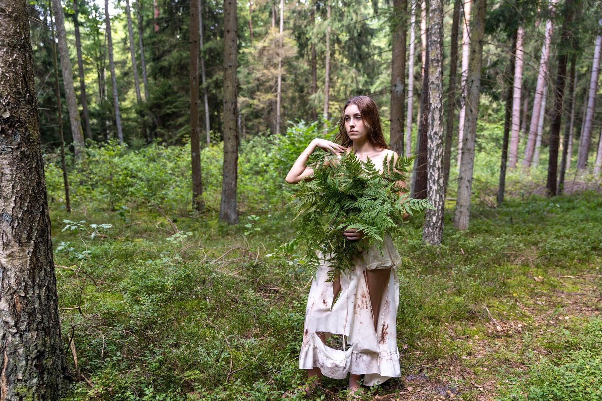

Teaser
Pierwsze spojrzenie na film — wkrótce.
Film inspirowany legendą
Wśród lasów i jezior dawna opowieść powraca z mroku.
01 / Film
Jezioro. Las. Ognisko. Noc, po której nic nie pozostaje takie samo.
„Goła Zośka 1812” to filmowa opowieść inspirowana lokalną legendą. W jej świecie historia spotyka pamięć miejsca, a cisza augustowskich lasów skrywa więcej, niż można dostrzec za dnia.
Nie każda historiaGoła Zośka 1812
kończy się o świcie.

02 / Miejsce i pamięć
Rok 1812 jest tłem tej opowieści. Jej sercem pozostaje Zośka oraz legenda związana z augustowskim krajobrazem.
Odkryj pierwsze zdjęcia, które przybliżają atmosferę filmu.
Kadry ze świata Gołej Zośki
03 / Odkrywaj film
Pierwsze obrazy ze świata „Gołej Zośki 1812”. Kliknij zdjęcie, aby obejrzeć je w pełnym rozmiarze.
Pierwsze spojrzenie na film — wkrótce.
Obsada i ekipa filmu — wkrótce.
Spotkamy się na premierze
Szczegóły pokazu i dalsze informacje podamy wkrótce.
Goła Zośka 1812